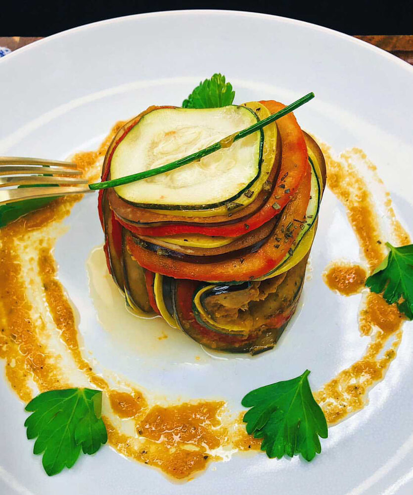

Ratatouille

Description
This delicious recipe was inspired from the best Disney Pixar film, "Ratatouille". It's masterfully put together by combining thinly sliced vegetables and topped with herbs.
Ingredients
- 6 Roma Tomatoes
- 3 Bell Peppers, Roasted and Seeded
- 2 Garlic Cloves
- 1/4 Yellow Onion
- 1/2 Cup Vegetable Stock
- 2 Teaspoons Herbs de Provence
- 3 Tablespoons Olive Oil, Divided
- Small Bunch Fresh Parsley
- 3 Basin Leaves, Torn
- 1 Japanese Eggplant
- 1 Zucchini
- 1 Yellow Squash
- 2 Sprigs of Rosemary
- 1 Single Chive, for Garnish
- Salt, to taste
- Pepper, to taste
Steps
- Blanch and peel all your tomatoes. Then in a large pot add 2 tbsp olive oil, chili flakes, garlic, three of your tomatoes, onion, garlic and your bell peppers.
- Sauté veg until soft on medium-medium high heat Season to taste. Once soft, add Herbes de Provence, parsley, basil and veg stock. Remove from heat, blend then add back to heat and reduce.
- Thinly slice egg plant, zucchini, squash and the rest of your tomatoes. Finely chop your rosemary.
- In a cast iron or baking pan, add a thin layer of your sauce. Shingle your veg and layer onto your surface. Top with a drizzle of olive oil, finely chopped rosemary and a healthy pinch of salt.
- Cover with parchment paper and bake in a 225°F oven for about 80-90 minutes. You want your veg to be tender, not mushy. Plate and serve.